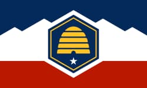

Shelby Baird
About Me
My name is Shelby Baird. I grew up in Nevada and moved to Utah when I was junior in high school. I've been married for 23 years and have 4 kids. As a a family we love to travel to Hawaii, snorkle, eat pineapples, and enjoy our time on the sand and in the sun.
Heber City Utah

Heber City sits in the Heber Valley, nestled in the Wasatch Mountains. The valley was originally home to the Ute people. Mormon pioneers first settled the valley in 1858–1859. Throughout the late 1800s, Heber Valley became known for its rich farmland and dairy farming, earning it the nickname "The Switzerland of America" due to its stunning mountain scenery and lush green meadows.